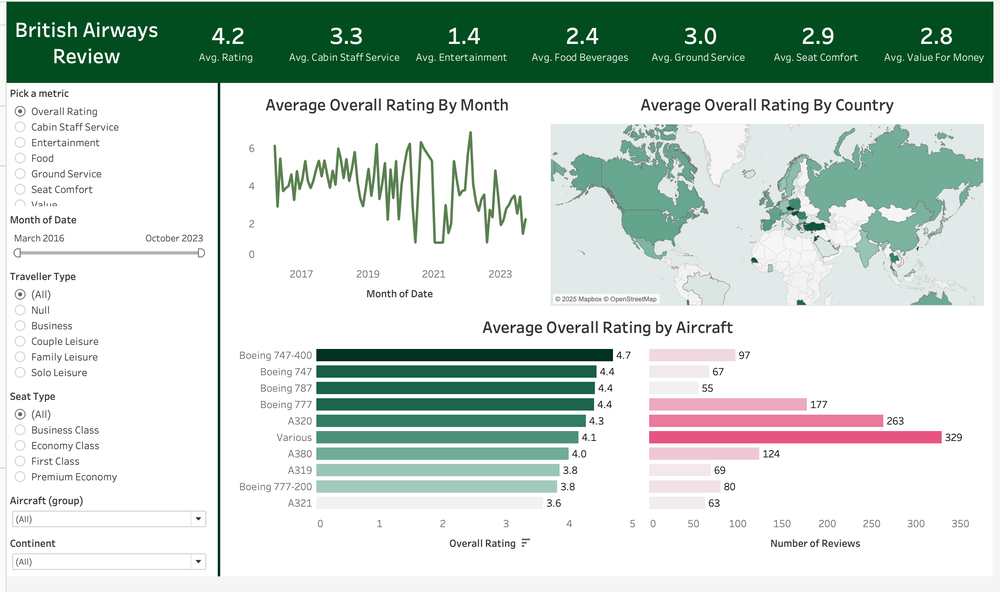

Comprehensive customer feedback analysis for British Airways from March 2016 to October 2023.
British Airways has long been a symbol of trust and luxury in air travel. Yet, like every airline, it faces its share of challenges in meeting the diverse expectations of its customers. What do passengers truly think of their experiences? What makes them choose British Airways repeatedly, and what pushes them toward alternatives? This project dives deep into the voice of the customer, uncovering insights hidden in years of reviews to tell a data-driven story about satisfaction, strengths, and opportunities for improvement.
This dashboard provides a comprehensive analysis of customer feedback and reviews for British Airways from March 2016 to October 2023. Built using Tableau, it visualizes customer ratings across various categories, such as overall satisfaction, cabin staff service, food, entertainment, and seat comfort.
The dashboard is designed to help stakeholders in the airline industry identify trends, strengths, and improvement opportunities by offering detailed insights into ratings by month, traveler type, region, and aircraft.
The dashboard displays the average ratings across critical categories based on customer reviews. The overall rating is 4.2, reflecting a mix of satisfaction levels. Cabin staff service is rated at 3.3, showcasing the professionalism and friendliness of the airline’s crew. However, entertainment is rated at a disappointing 1.4, indicating a significant gap in meeting customer expectations in this area. Food and beverages score 2.4, highlighting the need for better meal quality and variety. Ground service scores 3.0, while seat comfort and value for money are rated at 2.9 and 2.8, respectively, suggesting these areas also require further attention to enhance the customer experience.
This chart visualizes how the overall customer rating has changed over time. Ratings show visible fluctuations across months and years, with dips during specific periods suggesting seasonal challenges, such as delays during peak travel seasons or operational disruptions like cancellations or staff shortages.
The geographic heatmap illustrates customer satisfaction by country. Darker regions represent higher satisfaction levels, indicating consistent service quality and customer loyalty. In contrast, lighter regions highlight areas where operational challenges, cultural mismatches, or unmet customer expectations may exist, necessitating targeted service improvements.
The bar chart compares the average customer ratings for different aircraft types alongside the number of reviews for each. The Boeing 747-400 has the highest rating at 4.7, though it has fewer reviews (97). The Boeing 777, with the highest number of reviews (263), scores 4.4, indicating consistent customer satisfaction. In contrast, the A321 has the lowest rating of 3.6, suggesting potential issues with cabin comfort or design that require further investigation.
Interactive filters make the dashboard dynamic and user-friendly. Users can view visualizations by choosing specific metrics such as food, entertainment, or seat comfort. Filters for time range (March 2016 to October 2023), traveler type (e.g., business, leisure), seat type (economy, premium, business class), aircraft group, and region allow stakeholders to dive deep into tailored insights, enabling more precise decision-making.
Explore the full dashboard here: View the Dashboard
Below is a snapshot of the dashboard for a quick preview:
